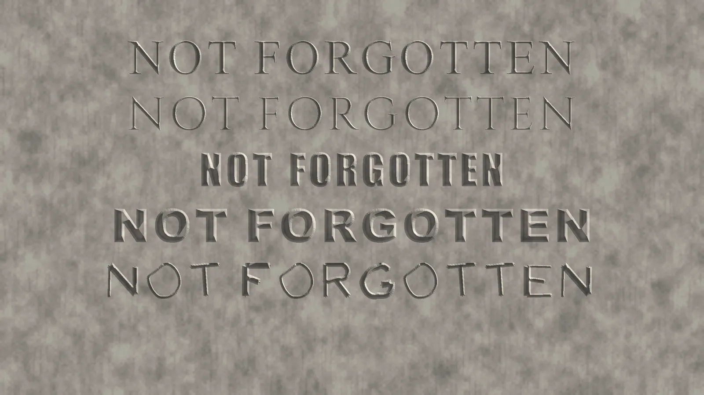

WHAT THE RAIN LEAVES
Five typefaces carved 36 mm high into one marble slab, then rained on for six hundred simulated years. Four of them were drawn by people. The last one, Weatherfast, was not drawn at all. A search asked a machine reader which letterforms the rain would erase last, and kept those. Then I looked at the slab myself. By eye, Arial Black outlasts Weatherfast from about year 200. The reader keeps reading Weatherfast into the sixth century. The search found the letters its judge could see. That gap is the piece.

Type in it
Weatherfast is capitals only; lowercase maps to the same capital, like an inscription. Download Weatherfast (TTF, OFL) source
Legibility over the centuries
Every alphabet was carved the same way, rained on with three fresh grain realisations, lit from two raking angles at each age, and read by the same reader. The curve is the reader's mean probability of the true letter.
How the rain was made
The stone is a heightfield. Rain dissolves it as a level set: every point of the surface recedes along its normal at a speed set by the local grain of the marble, times a curvature term that makes sharp lips dissolve faster and rounded hollows slower. The face recedes 2 mm a century, the urban marble rate Meierding measured on American tombstones; rural stones lose about half that. Letters are V cuts, 60 degrees included, 4.5 mm deep at most, which is roughly what a letter cutter does at this size.
One thing the maths insisted on, and I checked against the exact solution: uniform dissolution on its own never erases an incised letter. It rounds the groove bottom but the groove keeps its depth, and the ridge between two grooves stays sharp. What kills an inscription is the edge term: the lips of the cut go first, the groove widens and shallows, and one day it is a dent. So the letters that survive are the ones whose edges matter least.
The reader is an ensemble of three small convolutional networks trained on 249 real fonts (Windows plus Google Fonts) carved, rained on for up to 600 years, and rendered in raking light. It was validated on fonts it never saw. It is a machine, not an eye. It reads faint relief a person would give up on, and it is the same machine for every face, which is what a fair ranking needs.
The search runs in two stages with CMA-ES. First six shared parameters of a skeleton alphabet (stroke weight, contrast, cut angle, serif length and weight, width) are searched with all 26 letters scored together. Then each letter gets its own search over a smooth warp of its skeleton and per-stroke weights, every letter on the same grain so candidates compare fairly. The final alphabet was re-scored on grain it had never been rained with, and the shapes were traced into a TrueType font from the mouths of the cuts.
Caveats, plainly. This is a model of rain on marble, not marble. The recession rate comes from measurements; the edge sensitivity and grain scatter were tuned so that a Times New Roman inscription fades over three or four centuries, which is what old churchyards show. The judge is a neural network trained on renders from this same simulator. It normalises each tile and reads relief a few tenths of a millimetre deep under raking light, which a person looking at the slab cannot, and the search found exactly that blind spot: Weatherfast beats every baseline for the reader and loses to Arial Black for the eye. Arial Black wins by eye because its strokes are so wide that the rain cannot close them; the cuts flatten into broad shallow troughs that still cast a shadow. The dots on this page are the reader's opinion, not a claim about what you can read. The font file scores lower again: run back through the same judge, the traced TrueType outlines read 0.84 on average against 0.96 for the search's own carved masks, below Arial Black at 0.94, so the outline conversion lost part of what the search found (the I and X in particular) and I have not yet found where. The table below is a third opinion, two ordinary OCR engines that never saw this simulator, and they rank the found face mid-table, below Roboto Slab, Verdana, Arial and Georgia (Weatherfast does beat Times from year 300 on). Three judges, three rankings. The letters are also uneven in weight (B, F, G, N, U, V heavy; C, M, O, Q, W, X, Z light) because each was optimised alone and nothing asked for consistency; the font ships as found, not tidied. Lineage: day 25 (Pluvial) eroded a font with the rain and watched letters die. Today asks the opposite question.
Sources
T. C. Meierding, Marble tombstone weathering rates: a transect of the United States (1981) and Marble tombstone weathering and air pollution in North America (1993). Skeleton letters start from the Hershey fonts (public domain, 1967). Google Fonts under their respective licences were used only to train the reader.